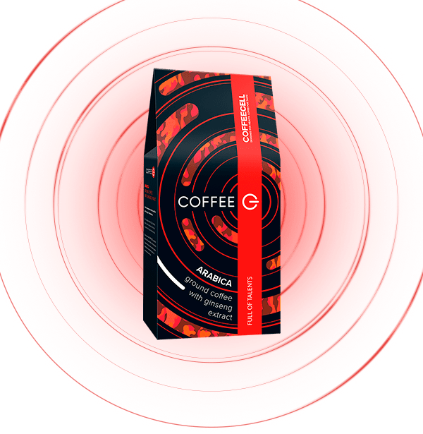
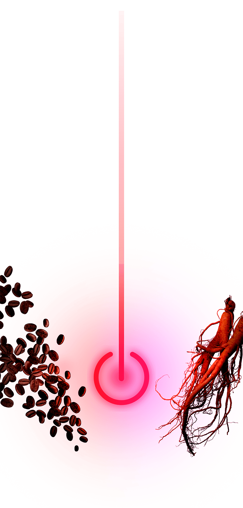

Отборная арабика из Бразилии проделала трансатлантический перелет, чтобы попасть в руки самых деликатных итальянских обжарщиков. При соединении с белым императорским женьшенем рождается восхитительный тандем с необыкновенным вкусом и пленительным ароматом, приятной кислотностью, телом средней плотности и легкой сладостью шоколада. Такой кофе не только заряжает энергией на весь день, но и оздоравливает и активирует работу всех жизненно важных систем внутренних органов. Ваш исключительный способ начать день на высоте.

Степень обжарки зерен кофе
средняя
Страна происхождения кофе
Бразилия
Страна обжарки и приготовления
Италия
СВОЙСТВА
Богатый насыщенный вкус классического кофе со средним телом, низкой кислотностью, сладостью с тонкими оттенками шоколада и экстрактом женьшеня.
Высококачественный шестилетний корень белого императорского женьшеня является натуральным антиоксидантом, который помогает противостоять ежедневному стрессу и улучшает когнитивные функции мозга, помогает восстанавливаться после высоких умственных и физических нагрузок.
Кофе помогает бороться с депрессией и плохим настроением, уменьшает тягу к нездоровым перекусам, способствуя улучшению вашей физической формы.
Кофе с императорским женьшенем снимает усталость и помогает организму выводить шлаки и токсины, нормализует сон и помогает легко просыпаться, полным сил.
Сочетание молотых зерен 100%-ной арабики и белого императорского женьшеня укрепляет иммунитет и заряжает энергией для реализации всех амбициозных планов вашего дня.
ПРЕИМУЩЕСТВА
Премиальность. Чистый природный продукт: состоит из 100% арабики родом из Бразилии и ценного экстракта белого императорского женьшеня, выращенного в заповеднике Чанбайшань (Китай) по специальной технологии, сочетающей инновации и многовековые традиции выращивания растения с наилучшими оздоравливающими характеристиками.
Гарантия качества. Кофе от всемирно известного итальянского завода Caffe Corsini, где уже 70 лет следуют традициям производства высококлассного кофе, благодаря чему удалось сохранить характеристики домашнего уюта и тепла в своих рецептурах кофе.
Технологичность. Деликатно измельченные зерна арабики, белый императорский женьшень, измельченный методом криодробления – это самый мощный тандем для вашего здоровья.
Универсальность. Подходит как для всех типов кофемашин, так и других способов заваривания кофе: классической варки в турке и заваривания в чашке.
СПОСОБ ПРИГОТОВЛЕНИЯ
1-2 чайных ложки на чашку (в зависимости от предпочтений по крепости), залить кипятком и настаивать 3-4 минуты или сварить в турке. Также для приготовления кофе используйте капельную кофеварку, гейзерную или френч-пресс в соответствии с их инструкцией по применению.
Хранение:
хранить в сухом прохладном месте
Состав:
обжаренный молотый кофе арабика,
экстракт женьшеня 1 %.
Форма выпуска:
упаковка 250 г.